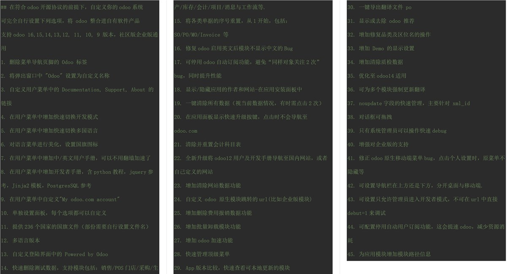

Multi-language Support..

Also you can get more powerful odoo apps from us. . like [superbar widget]

This moduld allows user to quickly customize and debranding Odoo. Quick debug, Language Switcher, Online Documentation Access,Quick Data Clear.
Support odoo 20,19,18,17,16,15,14,13,12,11,10,9. Including community and enterprise version.